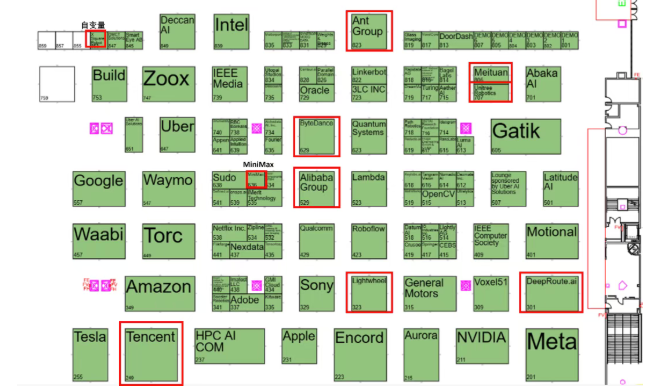
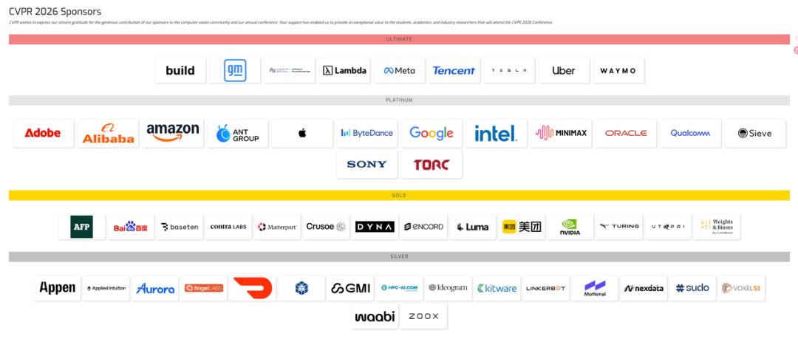

AI Daily: WeChat Open Platform Publishes AI Ecosystem Access Guidelines; Moonshot AI Secures Additional $2 Billion in Funding; ChatGPT Rolls Out Lockdown Mode in Emergency Response
Welcome to 'AI Daily' — your daily briefing on the evolving landscape of artificial intelligence.
Explore new AI offerings: https://app.aibase.com/zh
1. WeChat Open Platform Unveils AI Ecosystem Access Guidelines — Mini-Programs Now Eligible for Direct WeChat AI Invocation
WeChat Open Platform publishes the 'Guidelines on Developer Access to the WeChat AI Ecosystem,' offering mini-program developers a standardized framework for seamless integration into the WeChat AI ecosystem.

📌 📱 WeChat Open Platform issues AI ecosystem access guidelines. 🔌 Mini-programs enabled for direct invocation by WeChat AI.
2. Moonshot AI Secures Additional $2 Billion in Funding
Moonshot AI closes a fresh $2 billion financing round to accelerate Kimi product R&D and market expansion.

📌 💰 Moonshot AI secures an additional $2 billion. 📈 Accelerating Kimi R&D and market expansion.
3. ChatGPT Deploys Lockdown Mode on Emergency Basis to Strengthen User Privacy
ChatGPT has deployed a lockdown mode on an urgent basis to bolster user privacy safeguards and security controls.

📌 🔒 ChatGPT deploys lockdown mode on an emergency basis. 🛡️ Strengthening user privacy safeguards and security controls.
4. Kimi Code Open-Source Coding Agent Receives Upgrade
Kimi Code, the open-source coding agent, receives an upgrade enabling support for increasingly complex programming tasks.
5. Apple Issues Direct Response to iOS 27 AI Controversy
Apple issues a direct rebuttal to the iOS 27 AI controversy, affirming that all AI capabilities are entirely developed in-house.
6. Ant Group Establishes New Global Payment Rail for AI Agents
Ant Group has forged a new global payment rail for AI agents.
7. Meitu Xiuxiu Enters WeChat AI Ecosystem
Meitu Xiuxiu has been onboarded as one of the inaugural beta applications within the WeChat AI ecosystem.
8. Alibaba Qianwen Launches a College Admission Advising Agent
Alibaba Qianwen unveils a full-cycle college admission advisory agent for the Chinese Gaokao process.